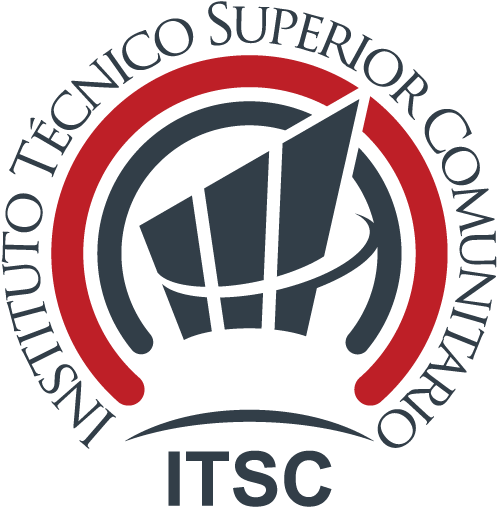
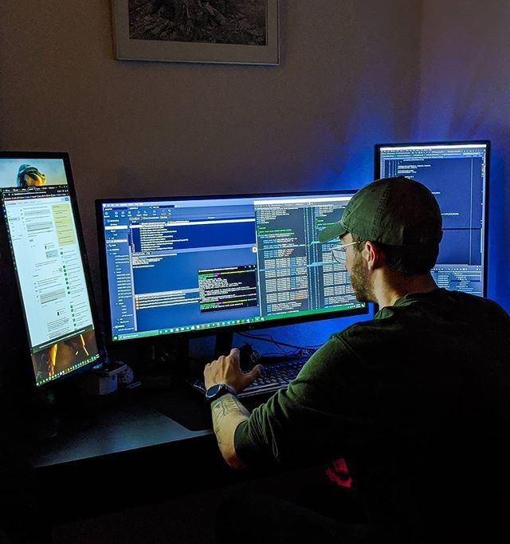
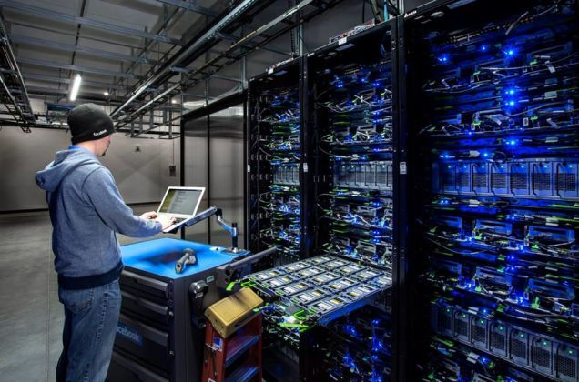
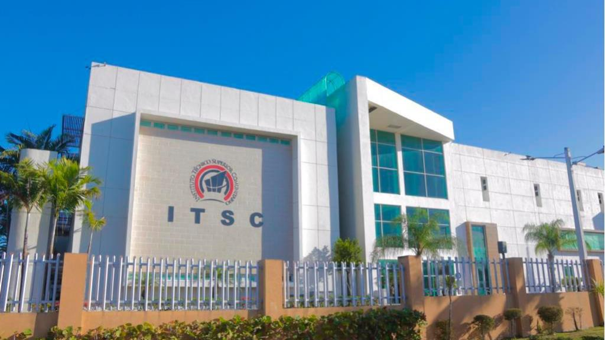

Portal institucional oficial
Conoce nuestras carreras, proceso de admisión, multimedia institucional y vías de contacto.
Explorar sitioEl Instituto Técnico Superior Comunitario (ITSC) es una institución educativa comprometida con la formación técnica de calidad, orientada al desarrollo de profesionales competentes.
Formar técnicos superiores con excelencia académica, ética y compromiso social.
Ser una institución líder en educación técnica superior en el país.
Carreras técnicas enfocadas en tecnología, innovación y desarrollo profesional.

Programación, aplicaciones web y móviles, bases de datos.

Instalación y mantenimiento de redes informáticas.
Integración de electrónica, mecánica y automatización.
Diseño visual, branding y contenido digital.
Combina teoría y práctica con alta inserción laboral.
Inicia tu proceso de admisión aquí:
